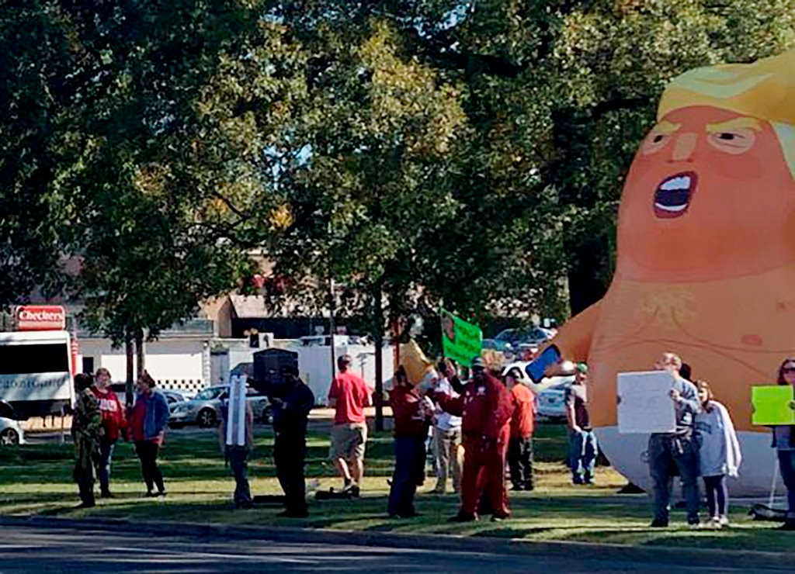

The authorities arrested a man they said had slashed a giant balloon of a baby Donald
Trump that was on display to protest the president’s visit to a football game in Alabama
on Saturday. The man, Hoyt Hutchinson, 32, was arrested after officers in Tuscaloosa,
Ala., saw him cut the balloon and then try to flee at about 1 p.m. on Saturday, the
police said on Facebook. It wasn’t clear what Mr. Hutchinson had used to slash the
balloon.
“I am going down here to make a scene, so y’all watch the news,” Mr. Hutchinson said in a Facebook Live video before the game.The balloon, which stands 20 feet tall and 13 feet wide when fully inflated, had been set up at a protest at Monnish Park. Mr. Trump attended the game about a mile away at Bryant-Denny Stadium to watch the University of Alabama and Louisiana State University face off. Mr. Hutchinson was charged with first-degree criminal mischief, the police said. He was taken to Tuscaloosa County Jail, posted $2,500 bond and watched the game’s third quarter, The Tuscaloosa News reported. (Louisiana State won, 46-41.) Mr. Hutchinson set up a GoFundMe account, “Restitutions for Baby Trump Stabber,” to raise money for his legal fees.
“Hoyt made sure our beloved president didn’t have to see this disrespectful balloon on the streets of Ttown today!!” the page says.As of Sunday morning, more than $20,000 had been donated. Mr. Hutchinson could not be immediately reached on Sunday.
Hoyt Hutchinson Tuscaloosa Police Department
A different GoFundMe campaign called “Get Baby Trump to Tuscaloosa” had drawn more than $7,000 to have the balloon at the protest. Organizers said it cost about $4,000 to bring the balloon, anchor it and staff it.
The orange balloon depicting Mr. Trump has its mouth agape, sports a white diaper and
has a cellphone in one hand. The balloon and its replicas often appear in protests at
places the president visits.
“It wouldn’t be a big Gameday in Tuscaloosa without a blimp overhead, so let’s make sure our special guest is greeted properly,” the organizers said on the page.
Get Baby Trump to Tuscaloosa
The balloon is one of six made available by the nonprofit group People’s Motorcade, its president, Jim Girvan, said on Sunday. He said he did not believe the Tuscaloosa balloon could be saved. “It’s a rather large gash,” Mr. Girvan said of a slit that runs about eight feet horizontally along the diaper line. “Some cuts can be repaired, but this one looks to be too big.” The five other balloons are at their home base in Somerset County, N.J.; in West Palm Beach, Fla., near the president’s private resort Mar-a-Lago; Wilmington, N.C., and Los Angeles. The balloons are replicas of the one that floated over London last year during Mr. Trump’s visit to the United Kingdom. It returned to London this year.Man Charged in Slashing of ‘Baby Trump’ Balloon, Police Say
Protesters displayed the balloon of a giant baby Donald Trump during the president’s visit to a football game in Alabama.
 balloonA 32-year-old man was arrested after police officers said they saw him slash the balloon and then try to flee on Saturday. Stephanie Taylor/The Tuscaloosa News, via Associated Press